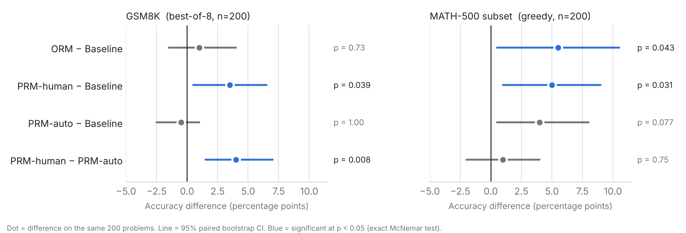

LLM post-training: human vs LLM step labels for reward modelling
After reading OpenAI's Let's Verify Step by Step, I wanted to know whether its expensive human step labels could be replaced by an LLM judge. I recreated the setup on Qwen2.5-7B-Instruct with GRPO. On GSM8K, step rewards from human labels were the only ones to clearly beat the baseline. GPT-4o mini labels did not, but the runs were not matched closely enough yet to say why.
GSM8K: majority vote over 8 samples, 200 test problems
| Model | Bar | Accuracy |
|---|---|---|
| Baseline (no RL) | 91% | |
| ORM | 92% | |
| PRM-human | 94.5% | |
| PRM-auto (GPT-4o mini) | 90.5% |
Problem
In Let's Verify Step by Step, OpenAI showed that reward models trained on step-level (process) supervision beat those trained only on final answers (outcome supervision) for maths reasoning. The catch is the data: it relied on 800,000 human labels for individual reasoning steps. I wanted to see if the effect held on a 7B model on my own hardware, and whether GPT-4o mini could label the steps instead, making process rewards much cheaper.
What I did
- Filtered the training problems by sampling each one 4 times and keeping only those the base model sometimes solves and sometimes fails, since all-correct groups give GRPO no gradient. This left 255 GSM8K and 206 MATH problems.
- Built GRPO training pipelines in TRL with LoRA (0.13% of parameters trainable) for three reward signals: ORM (is the final answer correct), PRM-human (step scores from a Qwen2.5-0.5B classifier I trained on PRM800K human labels) and PRM-auto (GPT-4o mini scoring each step, with 8 calls in parallel per group). Both PRM rewards also add a ±0.5 outcome bonus.
- Fine-tuned Qwen2.5-7B-Instruct with each reward on GSM8K and on MATH, on Apple MPS. Each run took 15 to 16 hours, and the GPT-4o mini labels cost about $3 in total. Tracked every run in Weights & Biases.
- Evaluated majority vote over 8 samples on 200 GSM8K problems and greedy accuracy on 200 MATH-500 problems, broken down by difficulty level. Since every model sees the same problems, I tested differences with a paired bootstrap and exact McNemar tests.
Results
- 94.5% vs 91%GSM8K, PRM-human vs baseline (majority vote over 8, 200 problems, p = 0.039)
- 54.5% vs 49%MATH-500 subset (200 problems), ORM trained on MATH vs baseline (p = 0.043)
- 8% → 20%MATH-500 Level 5 (4 to 10 of 50 problems), PRM-human trained on MATH vs baseline
MATH-500 accuracy by difficulty level (200 problems, greedy decoding)
| Model | Overall | L1 (n=21) | L2 (n=44) | L3 (n=41) | L4 (n=44) | L5 (n=50) |
|---|---|---|---|---|---|---|
| Baseline | 49.0% | 95% | 73% | 66% | 34% | 8% |
| ORM-MATH | 54.5% | 90% | 80% | 66% | 48% | 14% |
| PRM-human-MATH | 54.0% | 90% | 80% | 66% | 39% | 20% |
| PRM-auto-MATH | 53.0% | 95% | 80% | 68% | 36% | 14% |


On GSM8K, PRM-human beat both the baseline (p = 0.039) and PRM-auto (p = 0.008), and its edge over ORM was borderline (p = 0.06). On MATH, all three GRPO rewards beat the baseline, but they can't be told apart at this sample size. With 8 comparisons and no multiple-testing correction, p-values near 0.05 are suggestive only.
The PRM-human vs PRM-auto gap is not a controlled comparison yet. The PRM-auto runs used a stronger KL penalty (0.05 vs 0.01) and a different training length from the GSM8K ORM and PRM-human runs, so the gap can't be put down to label quality alone. A matched rerun is planned.
Limitations
- One training seed per condition, so run-to-run variance from GRPO is not measured.
- 200 problems per benchmark. Differences under about 3 points should not be read as real.
- One base model and one LLM judge. A stronger judge than GPT-4o mini might close the gap.
- The PRM800K classifier was trained on MATH-style solutions, and its accuracy on the policy's own GSM8K steps was not measured.